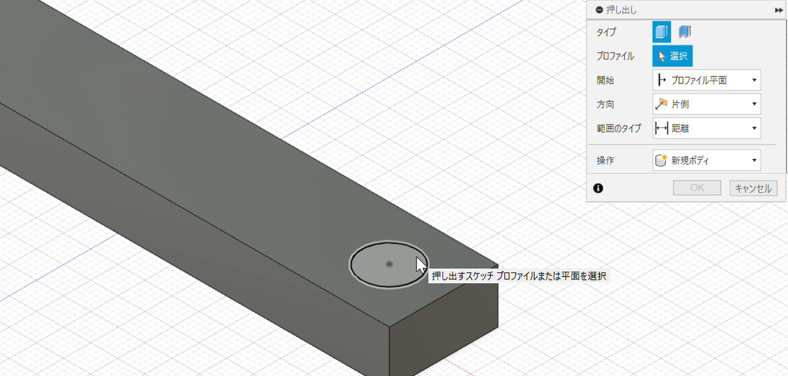
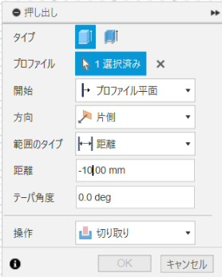
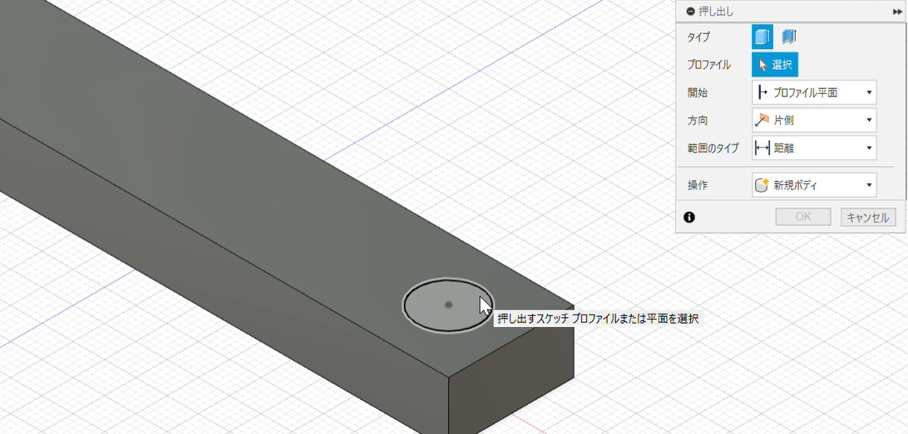
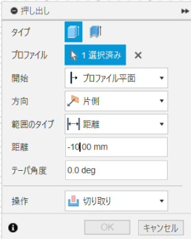

押し出し(切り取り)
動画：押し出し(切り取り)
①「ツールバー」にある「押し出し」を選択し、「スケッチ(円)」で作成した円を選択します。

②「押し出し」の時の「②」の時と同じようにボックスの距離を「ー」(ひく)を前につけ数字を入れ、操作が「切り取り」もなっていることを確認します。(動画では「-10」を入れている)

③「ok」を押し、押し出しを完了します。
動画：押し出し(切り取り)
①「ツールバー」にある「押し出し」を選択し、「スケッチ(円)」で作成した円を選択します。

②「押し出し」の時の「②」の時と同じようにボックスの距離を「ー」(ひく)を前につけ数字を入れ、操作が「切り取り」もなっていることを確認します。(動画では「-10」を入れている)

③「ok」を押し、押し出しを完了します。